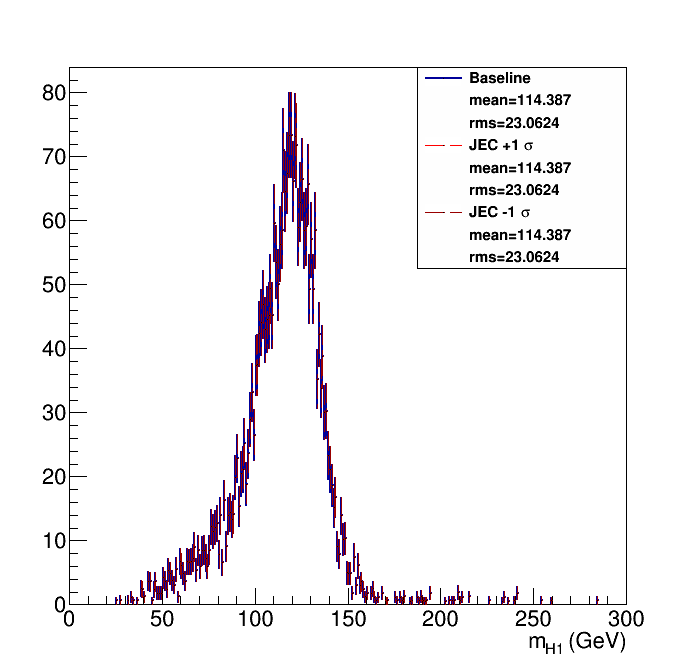
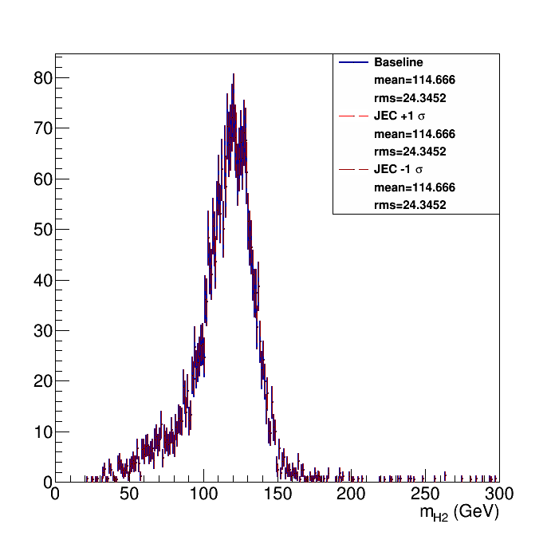
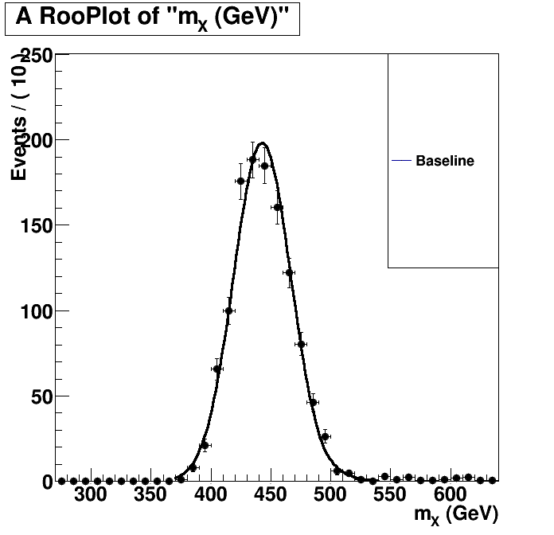
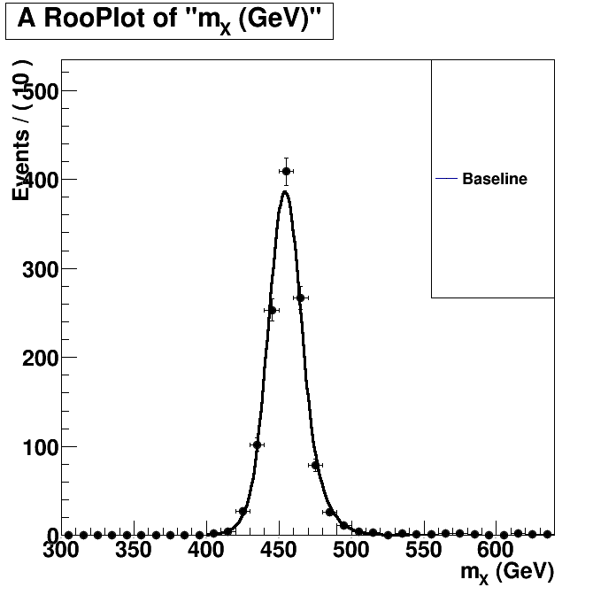

| Higgs 1 mass  | Higgs 2 mass  |
Without Kin-Fit. Fitted to an Exp-Gauss-Exp function.=== Baseline plot === |
With Kin-Fit. Fitted to an Exp-Gauss-Exp function.=== Baseline plot === norm = 268.245 sg_p0 = 454.218 0.378764 sg_p1 = 11.6496 0.31077 sg_p2 = 1.19814 0.0676831 sg_p3 = 1.72493 0.129107 btag lnN 1.07788 - |